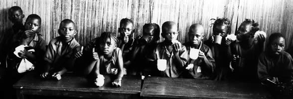
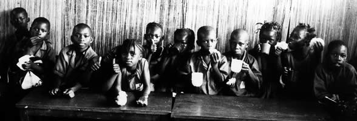

A Rudolf Steiner School
Contact UsFreetown, Sierra Leone
“Our highest endeavour must be to develop free human beings who are able of themselves to impart purpose and direction to their lives.”Rudolf Steiner


 


Get involved...
Shannoh Kandoh Writes
Update May 2011
Since the beginning of 2011, parents, faculty members and children of the Goderich Waldorf School have become increasingly wary of the future of the school amidst pressures from government authorities to close it next September if proper classrooms are not constructed to provide to an enabling teaching and learning environment.
The present school structure is made up of bush poles, covered with plastic and roofed with corrugated iron sheets. It hosts 90 children in three classes (1-3). In this situation, even the kind expressions of nature that we experience through wind, sun and rain are rather tormenting. On rainy days, children’s paintings get soaked as a result of water rolling down the plastic ‘walls’. On sunny days, the building becomes nothing less than a green house. Students and teachers will take their chairs and tables under the trees to continue sessions. Nice and beautiful it may sound to have classes under the tree, but it does not last long because wild winds blowing will splash sand on their faces and blow away children’s books.
The community together with the faculty has had series of meetings for the past three months to discuss ways that will keep their children in school. School for the families and children is not only about reading and writing, but a place of safety, hope and rest. For most of the children, the home is a place of unending labor (work without play). So the time in school is looked forward to everyday. The school lunch project which is supported by Mr Stephan Rivoir and Christian Riester through the ‘’Full den topf’’ school lunch initiative from Germany continues to epitomize love: real love that they can understand and feel. This is because in poorer communities in Sierra Leone, most families have only one meal a day. Children would have to help their parents in digging sand, fishing or doing petty trading before they could have some money to prepare food on a daily basis. These kinds of burdens on children are some of the reasons why children go to live on the street.
The Goderich Waldorf School’s intervention on behalf of children has been a preventive approach. The school teachers have been on mass awareness raising trainings on the rights of children and the responsibility of parents to provide safety, care, support and education for their children whatever the circumstances may be. This is done during parent-teachers meetings.
By Faith
We have been acting by faith. Faith in the cosmic realities: that everything in the natural world existed first in the supernatural. And the angels are always at our disposal to bring the unseen to reality when we act by faith. This is what happened in December 2010 when the school’s founder, Shannoh Kandoh, provided a seed fund of $5,000(USD) to start a store house for the school. We have been facing great challenges in storing school materials and thus having a store house was a priority. Also, even in the process of building the school, storage is very critical. So even when the possibility of having a school building was far remote, we were encouraged to start building a storehouse ‘for the harvest’ says Shannoh Kandoh. The school store is now under construction with great support from parents who are providing labour during the work.
The Miracle
Now, in February 2011 came the miracle. After appeals were made to all our friends for help to build our school, we had a response from The Dhana Trust, our representative in the UK. Through a generous donation from an anonymous donor, RSF Finance (Rudolf Steiner Foundation) in San Francisco made the grant to The Dhana Trust for the building of our school. The donor expressly wished for the school to be designed and built by the highly acclaimed American eco-architect, Mike Reynolds (www.earthship.com). Mike and team have been involved in biotecture building projects in Haiti, the Andaman Islands, New Orleans and many other parts of the world. Indeed the Earthship effort could best be described as a rescue mission.
Mike Reynolds will met with Shannoh and other members of the Goderich Waldorf school association in Sierra Leone between 22-24 April to further discuss on practical issues and interact with the communities. For us as a school community, Mike's presence will reassure the parents of their children’s continuing schooling. We are all very excited by this forthcoming project as it will also provide training skills to local members of the community to learn how to build sustainable eco-shelters of their own. The new school will incorporate solar power and be able to collect rain water for use in the sewage systems as well as provide water for the agriculture project.
Teacher Training
Three of our class teachers (classes 1-3) have applied to commence state teacher training according to government policy. A flexible mode of study (after school sessions) is opted for to enable our teachers to acquire state certification in less than 3 years. Meanwhile, we value the Waldorf curriculum and methodology which we continue to adapt with the national curriculum in the classroom.
Waldorf Teacher Training Center
For the above reasons, we intend to continue our fundraising drive for the building of a structure that will serve as a teacher training centre. This is a capacity building strategy for a sustainable school programme. It is our dream that in the future experienced Waldorf educators will come to Sierra Leone for few months to provide training in Waldorf pedagogy for our teachers. This idea of building a structure for teacher training could grow into a regional Waldorf teacher training center for West Africa. This is very possible because we have the land to build, the children and community as our guarantee and, as well as enthusiastic young persons who would like to be trained in Steiner education. In this regard we would appreciate ideas on ways of pursuing the idea of a teacher training centre in Sierra Leone.
Back to main Shannoh Kandoh Writes page »